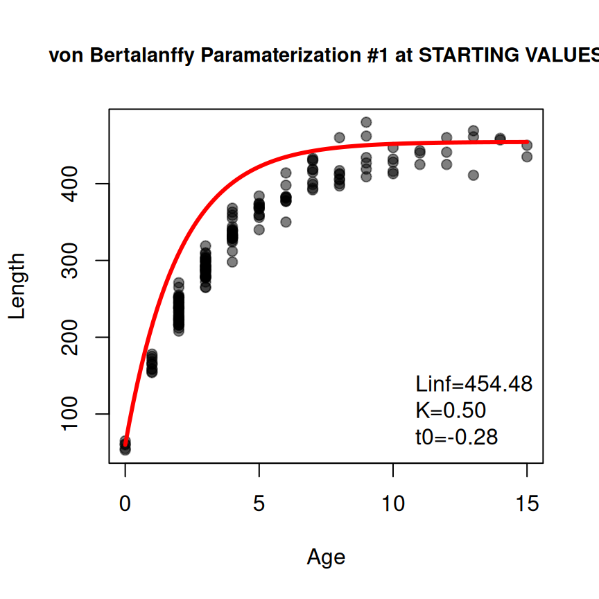
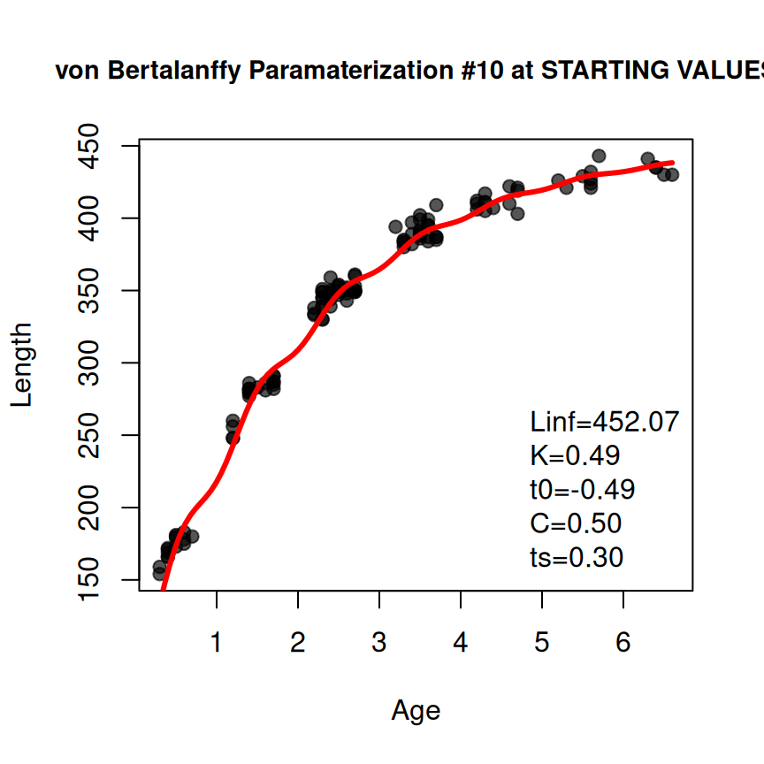

The objective of this article is to briefly describe how to fit growth functions commonly used in fisheries to data using the FSA package for R. It assumes that you are familiar with fish growth data, fish growth functions, and non-linear modeling. This background is also described in Chapter 12 of my Introductory Fisheries Analyses with R book, my (and co-authors) Chapter 12 in Age and Growth of Fishes: Principles and Techniques book, and in several fishR blog posts.
The main functions from FSA used to model fish growth are makeGrowthFun() to create R functions that represent various parameterizations of common fisheries growth functions, findGrowthStarts() to identify typically useful starting values to be used in non-linear algorithms for fitting common fisheries growth models, and showGrowthFun() for creating strings or expressions of the equations for common fisheries growth function. Each of these functions uses type= to identify a common fisheries growth function family (i.e,. "von Bertalanffy", “Gomperz”, “logistic”, “Richards”, “Schnute”, or “Schnute-Richards”) and param= or pname= to identify a specific paramaterization of the function within that family, either by number or by name. These and other common arguments to these functions are described and illustrated below. More focused or advanced use is illustrated in the function documentations.
Note that the FSA functions described here were modified after version 0.9.6 and are thus specific to FSA >v0.9.6.
First Example – Typical von Bertalanffy
The most common growth model is the von Bertalanffy model as parameterized by Beverton and Holt with three paramaters , , and . The equation for this growth function can be displayed with showGrowthFun() using type="von Bertalanffy", pname="Typical",1 and, to display the equation, plot=TRUE).2
showGrowthFun(type="von Bertalanffy",pname="Typical",plot=TRUE,cex=1.5)An R function to return a predicted length from this equation when given an age (or ages) and values for the three parameters can be created with makeGrowthFun() using the same type= and pname=3 as used in showGrowthFun(). The result from makeGrowthFun() should be assigned to an object, which will then be the name of the R function to predict lengths.
vb1 <- makeGrowthFun(type="von Bertalanffy",pname="Typical")For example, vb1() can now be used to predict the mean length for age-2 fish assuming , , and .
vb1(2,Linf=450,K=0.3,t0=-0.5)
#> [1] 237.4351The default result from makeGrowthFun() creates a function where the three parameters can be given to the first parameter name as a numeric vector with values for all three parameters. For example, the mean length at age-2 can also be predicted with the following.
vb1(2,Linf=c(450,0.3,-0.5))
#> [1] 237.4351Note that using the vector of parameter values in this way is useful (as will be demonstrated below) but also requires that the values are provided in the order that the function expects them. This order can be seen by displaying the function code and noting the order of the arguments in the function declaration.
vb1
#> function (t, Linf, K = NULL, t0 = NULL)
#> {
#> if (length(Linf) == 3) {
#> t0 <- Linf[[3]]
#> K <- Linf[[2]]
#> Linf <- Linf[[1]]
#> }
#> Linf * (1 - exp(-K * (t - t0)))
#> }
#> <bytecode: 0x55a228c7ef38>
#> <environment: namespace:FSA>The same vb1() function can be used to predict mean lengths for a number of ages (e.g., ages 2 to 12 below).
vb1(2:12,Linf=450,K=0.3,t0=-0.5)
#> [1] 237.4351 292.5280 333.3419 363.5775 385.9767 402.5703 414.8633 423.9701
#> [9] 430.7165 435.7145 439.4170These examples of predicted mean lengths at age given the growth function equation and parameter values are fairly trivial. The most useful aspect of the saved function will be its use in fitting data to the growth function.
Non-linear model fitting algorithms require starting values for the function parameters. Starting values for the parameters of most common fisheries growth functions can be obtained using findGrowthStarts(). To demonstrate findGrowthStarts() suppose that length-at-age (recorded as an annual age) are available in tlV and age of the GrowthData1 data.frame,4, a snapshot of which is shown below.
findGrowthStarts() requires a formula of the form length~age,5 a corresponding data.frame in data=, and the same type= and pname=6 as in showGrowthFun() and makeGrowthFun(). For example, starting values for the GrowthData1 data and the typical parameterization of the von Bertalanffy growth function are obtained below. The results of findGrowthStarts() should be assigned to an object for later use.7
( vsv1 <- findGrowthStarts(tlV~age,data=GrowthData1,type="von Bertalanffy",pname="Typical") )
#> Linf K t0
#> 454.4806075 0.2974555 -0.4752262There may be times when the provided starting values are non-sensical (you may get a warning message) or they do not lead to model convergence when fitting the non-linear regression to data. In these instances it may be useful to view a quick diagnostic plot of how the model evaluated at the starting values “fits” the data. Such a plot can be made by including plot=TRUE in findGrowthStarts().8
vsv1 <- findGrowthStarts(tlV~age,data=GrowthData1,type="von Bertalanffy",pname="Typical",
plot=TRUE)Additionally, it may be useful to “fix” some starting values at values of your choice (rather than having them determined from the data). Such parameters can be included in a NAMED vector given to fixed= in findGrowthStarts(). For example, the K parameter is fixed at 0.5 below.9
vsv2 <- findGrowthStarts(tlV~age,data=GrowthData1,type="von Bertalanffy",param=1,
fixed=c(K=0.5),plot=TRUE)
Data are then fit to the non-linear growth model using nls() with a formula that has length on the left-hand-side and the specific growth function with the specific age variable and model parameter names on the right-hand-side, the associated data in data=, and the saved starting values in start=.
resv1 <- nls(tlV~vb1(age,Linf,K,t0),data=GrowthData1,start=vsv1)The estimated values of the parameters are extracted from this saved nls() object with coef() and likelihood profile confidence intervals are extracted with confint(). The two can be column-bound together for a concise report.
Displaying the fitted function with the data can be done in a variety of ways. Below is a quick plot that uses ggplot() along with stat_function(). The important things to note about stat_function() are that the R function for the growth function is given in fun= and the parameter estimates are extracted with coef() and given to the first parameter name (i.e,. Linf in this example) inside a list that is assigned to args=.
ggplot(data=GrowthData1,aes(y=tlV,x=age)) +
geom_point(size=2.5,alpha=0.2) +
scale_y_continuous(name="Total Length (mm)",limits=c(0,NA)) +
scale_x_continuous(name="Age (years)") +
stat_function(fun=vb1,args=list(Linf=coef(resv1)),linewidth=1,color="blue") +
theme_bw()An equation of the growth function with the parameter estimates can be created with showGrowthFun() using the same type= and pname= as before, but also including the saved nls() object in fit=. The object returned from showGrowthFun() can be used in annotate() from ggplot2 to add the equation to the plot. Note that parse=TRUE is required in annotate() to convert the text returned from showGrowthFun() into an expression, size= controls the size of the text, and x= and y= are used to place (usually with trial-and-error) the equation.
ggplot(data=GrowthData1,aes(y=tlV,x=age)) +
geom_point(size=2.5,alpha=0.2) +
scale_y_continuous(name="Total Length (mm)",limits=c(0,NA)) +
scale_x_continuous(name="Age (years)") +
stat_function(fun=vb1,args=list(Linf=coef(resv1)),linewidth=1,color="blue") +
annotate(geom="text",
label=showGrowthFun(type="von Bertalanffy",pame="Typical",fit=resv1),
parse=TRUE,size=5,x=9,y=50) +
theme_bw()Second Example – Richards
The same general process works for other growth models. For example, suppose that your data suggests an inflection point in the growth trajectory so you want to fit the second parameterization of the Richards function, which has four parameters of , , , and . The same general workflow is illustrated below noting that type="Richards" and param=2 is used, but those are assigned to objects outside the function to save some repetitive typing.10
typ <- "Richards"
prm <- 2
rich1 <- makeGrowthFun(type=typ,param=prm)
rsv1 <- findGrowthStarts(tlR~age,data=GrowthData1,type=typ,param=prm,plot=TRUE)
resr1 <- nls(tlR~rich1(age,Linf,k,t0,b),data=GrowthData1,start=rsv1)
cbind(Est=coef(resr1),confint(resr1))
#> Waiting for profiling to be done...
#> Est 2.5% 97.5%
#> Linf 452.9499118 444.5152186 462.5688222
#> k 0.5309684 0.4303097 0.6601910
#> t0 4.7527545 3.4644030 5.5695013
#> b -0.4424650 -0.7086819 -0.3007673
ggplot(data=GrowthData1,aes(y=tlR,x=age)) +
geom_point(size=2.5,alpha=0.2) +
scale_y_continuous(name="Total Length (mm)",limits=c(0,NA)) +
scale_x_continuous(name="Age (years)") +
stat_function(fun=rich1,args=list(Linf=coef(resr1)),linewidth=1,color="blue") +
annotate(geom="text",label=showGrowthFun(type=typ,param=prm,fit=resr1),
parse=TRUE,size=5,x=9,y=50) +
theme_bw()Third Example – Francis von Bertalanffy
Some growth models require certain values to be set at constant values. For example, the Francis parameterization of the von Bertalanffy function has three parameters (, , and ) that are estimated mean lengths at three specified ages. Two of those ages – and – are set by the user for defining and . The third parameter () is defined at the time that is the average of and . Ages for and must be set in a NAMED vector (cv2 below) given to constvals= in findGrowthStarts(), the function created by makeGrowthFun(), and showGrowthFun(). The rest of the workflow is the similar to above (noting that type= and pname= are adjusted). However note that the Francis model uses a “where” clause to simplify the look of the equation, which can result in a long (i.e., wide) equation. The use of stackWhere=TRUE in showGrowthFun() will “stack” the “where” clause underneath the main equation to narrow (but make taller) the equation. Further note that the result from showGrowthFun() was saved to an object here just to reduce clutter in the plotting code.
typ <- "von Bertalanffy"
prm <- "Francis"
vb2 <- makeGrowthFun(type=typ,pname=prm)
cv2 <- c(t1=0,t3=12)
rsv2 <- findGrowthStarts(tlV~age,data=GrowthData1,type=typ,pname=prm,
constvals=cv2,plot=TRUE)
eqn <- showGrowthFun(type=typ,pname=prm,fit=resv2,constvals=cv2,stackWhere=TRUE)
ggplot(data=GrowthData1,aes(y=tlV,x=age)) +
geom_point(size=2.5,alpha=0.2) +
scale_y_continuous(name="Total Length (mm)",limits=c(0,NA)) +
scale_x_continuous(name="Age (years)") +
stat_function(fun=vb2,args=list(L1=coef(resv2),t1=cv2),linewidth=1,color="blue") +
annotate(geom="text",label=eqn,parse=TRUE,size=4.5,x=10,y=50) +
theme_bw()Fourth Example – Somer’s (Seasonal) von Bertalanffy
The Somer’s parameterization of the von Bertalanffy can be used to model data where ages are fractional parts of the year, often referred to as seasonal length-at-age data. The process for fitting this model is very similar to above as illustrated below.11
type <- "von Bertalanffy"
prm <- "Somers"
vb3 <- makeGrowthFun(type=typ,pname=prm)
rsv3 <- findGrowthStarts(tlS~age,data=GrowthData2,type=typ,pname=prm,plot=TRUE)
resv3 <- nls(tlS~vb3(age,Linf,K,t0,C,ts),data=GrowthData2,start=rsv3)
cbind(Est=coef(resv3),confint(resv3))
#> Waiting for profiling to be done...
#> Est 2.5% 97.5%
#> Linf 450.3311672 446.26959271 454.5753258
#> K 0.5052008 0.48680724 0.5239582
#> t0 -0.4183363 -0.55965206 -0.1697775
#> C 0.9398083 0.73548569 1.1529083
#> ts 0.1145216 0.07858732 0.1420780
eqn <- showGrowthFun(type=typ,pname=prm,fit=resv3,stackWhere=TRUE)
ggplot(data=GrowthData2,aes(y=tlS,x=age)) +
geom_point(size=2.5,alpha=0.4) +
scale_y_continuous(name="Total Length (mm)",limits=c(0,NA)) +
scale_x_continuous(name="Age (years)") +
stat_function(fun=vb3,args=list(Linf=coef(resv3)),linewidth=1,color="blue") +
annotate(geom="text",label=eqn,parse=TRUE,size=4,x=4,y=50) +
theme_bw()Fifth Example – Fabens (Tag-Recapture) von Bertalanffy
Using parameterizations of the von Bertalanffy for tag-recapture data12 follows a similar workflow, but with a few different details. First, some of the parameterizations use the change in length as the response variable, whereas others use the length at recapture. The first example here will use Fabens parameterization which uses the change-in-length as the response variable.
Before continuing, this example will use the data in GrowthData3, which is shown below and has variables that are the unique tag number of the fish (tag), the total length at marking/tagging (tlM) and subsequent recapture (tlR), time-at-large (time between marking and recapture; deltat), and change in length (deltaL).
peek(GrowthData3,n=10)
#> tag tlM tlR deltat deltaL
#> 1 5 240 335 2.1022151 95
#> 14 109 285 367 2.1137812 82
#> 28 218 329 389 2.0448716 60
#> 43 366 240 328 1.9849893 88
#> 57 470 295 335 1.0461305 40
#> 71 564 290 326 0.9713158 36
#> 85 670 164 291 2.0017494 127
#> 100 757 334 365 1.0982425 31
#> 114 901 389 404 1.1392284 15
#> 128 1000 385 405 1.1120293 20The primary explanatory variable in tag-recaptures models in FSA is the time-at-large but the length at marking is also required in many models. Thus, both time-at-large and length at marking will appear in the function created by makeGrowthFun(). For example, a function to predict the change in length from the time-at-large and length at marking for the Fabens parameterization is created below.
typ <- "von Bertalanffy"
prm <- "Fabens"
( vb4 <- makeGrowthFun(type=typ,pname=prm) )
#> function (dt, Lm, Linf, K = NULL)
#> {
#> if (length(Linf) == 2) {
#> K <- Linf[[2]]
#> Linf <- Linf[[1]]
#> }
#> (Linf - Lm) * (1 - exp(-K * dt))
#> }
#> <bytecode: 0x55a22657e460>
#> <environment: namespace:FSA>For example, the predicted change in length for times-at-large of 1, 2, and 3 years and a length-at-marking of 300 mm (and assuming =450 and =0.3) is obtained with the following.
vb4(1:3,300,Linf=450,K=0.3)
#> [1] 38.87727 67.67825 89.01455Or the predicted change in length of a 1 year time-at-large for fish with lengths-at-marking of 100, 200, and 300 mm is obtained with the following.
vb4(1,c(100,200,300),Linf=450,K=0.3)
#> [1] 90.71362 64.79544 38.87727With this understanding the rest of workflow is similar to above with the excecption that the formula in findGrowthStarts() will be of the form deltaL~deltat+Lm.
rsv4 <- findGrowthStarts(deltaL~deltat+tlM,data=GrowthData3,type=typ,pname=prm)
resv4 <- nls(deltaL~vb4(deltat,tlM,Linf,K),data=GrowthData3,start=rsv4)
cbind(Est=coef(resv4),confint(resv4))
#> Waiting for profiling to be done...
#> Est 2.5% 97.5%
#> Linf 446.3107842 440.4914317 452.5043374
#> K 0.3091659 0.2943062 0.3245036Unfortunately, there is not one single graphic that can be used to summarize the results from fitting the growth model to tag-recapture data. The code below won’t be discussed in detail, though a few important details will be highlighted. First, this plot leverages the fact that the marking and tagging sampling events were generally conducted annually so that the times-at-large were very nearly exactly 1, 2, or 3 years. Second, a data.frame is created that uses the fitted model to predict the change-in-length for those three times-at-large at the minimum observed length-at-marking and the estimated . These predictions will be used to place three fitted lines, one for each rough time-at-large, on the scatterplot of change-in-length versus length-at-marking. Only two points are needed for the lines here because Fabens model assumes a linear decline in change-in-length with increase length-at-marking for each time-at-large.
pdf <- data.frame(tlM=rep(c(min(GrowthData3$tlM),coef(resv4)[["Linf"]]),each=3),
deltat=rep(c(1,2,3),times=2))
pdf$deltaL <- vb4(pdf$deltat,pdf$tlM,Linf=coef(resv4)[["Linf"]],K=coef(resv4)[["K"]])
pdf
#> tlM deltat deltaL
#> 1 158.0000 1 76.67366
#> 2 158.0000 2 132.95664
#> 3 158.0000 3 174.27168
#> 4 446.3108 1 0.00000
#> 5 446.3108 2 0.00000
#> 6 446.3108 3 0.00000The plotting routine looks more complicated here because the original data.frame is used to place the observed points on the graph, but the predicted data.frame is used to place the lines. In addition, the deltat variable is converted to a factor so that a discrete number of colors would be used. Finally note the use of showGrowthFun() and annotate() to add the equation to the plot.
eqn <- showGrowthFun(type=typ,pname=prm,fit=resv4)
ggplot() +
geom_point(data=GrowthData3,mapping=aes(x=tlM,y=deltaL,col=as.factor(round(deltat,0))),
size=2.5,alpha=0.4) +
geom_line(data=pdf,mapping=aes(x=tlM,y=deltaL,col=as.factor(deltat)),linewidth=1) +
scale_y_continuous(name="Change in Length from Marking (mm)",limits=c(0,NA)) +
scale_x_continuous(name="Total Length-at-Marking (mm)") +
labs(color="Years-at-Large") +
annotate(geom="text",label=eqn,parse=TRUE,size=4.2,x=350,y=165) +
theme_bw() +
theme(legend.position="inside",
legend.position.inside=c(0.85,0.5))
Exploring Model Parameters
Understanding the meaning of parameters in the growth functions is important for properly modeling fish growth. One way to learn about the meaning of a parameter is to plot the growth function while varying one parameter and holding the other parameters constant. The growth functions created by makeGrowthFun() will aid in this process.
For simplicity, a ggplot2 theme was created that modified theme_bw() to remove the grid lines and move the legend inside of the plot panel.
theme_grow <- function() {
theme_bw() +
theme(panel.grid=element_blank(),
legend.position="inside",
legend.position.inside=c(1,0),
legend.justification.inside=c(1.1,0))
}In this example, the parameter for the instantaneous growth () at the inflection point ($t_i) in the second parameterization of the Gompertz growth function will be explored. An R function for this parameterization is created below with makeGrowthFun() and the corresponding generic equation is created with showGrowthFun(). Note that parse=TRUE is used in showGrowthFun() here because the equation is going to form the title in the ggplot which requires an expression (returned when parse=TRUE) rather than a string that it will parse.
f <- makeGrowthFun(type="Gompertz",param=2)
feqn <- showGrowthFun(type="Gompertz",param=2,parse=TRUE)A data.frame is then created that has all combinations of a sequence of ages over which to show the growth function and values for both the parameter that varies and those that are held constant. In the example below, age will be a sequence from -0.5 to 15 in steps of 0.513, will be held constant at 450, (age at the inflection point) will be held constant at 3, and will vary from 0.1 to 0.6 in steps of 0.1. Length is then computed from these ages and parameter values using the growth function created above (i.e., f()). Finally, the variable with the parameter that varied is converted to a factor so that the plot created next will use a discrete rather than continuous number of colors.
tmp <- expand.grid(Age=seq(-0.5,15,0.5),
Linf=450,gi=seq(0.1,0.6,0.1),ti=3) |>
dplyr::mutate(Length=f(Age,Linf,gi,ti),
gi=as.factor(gi))
peek(tmp,n=6)
#> Age Linf gi ti Length
#> 1 -0.5 450 0.1 3 108.8728
#> 38 2.0 450 0.2 3 132.6673
#> 77 5.5 450 0.3 3 280.5862
#> 115 8.5 450 0.4 3 402.8017
#> 154 12.0 450 0.5 3 445.0286
#> 192 15.0 450 0.6 3 449.6642These simulated data are then plotted using the parameter that varied to denote color.
ggplot(data=tmp,mapping=aes(y=Length,x=Age,color=gi)) +
geom_line(linewidth=1)+
labs(title=feqn) +
theme_grow()From here one can observe that each instance of this Gompertz function has an infection point at age-3 and that the “rate of growth” at that inflection point is greater as increases, making the growth function look more “S-shaped.”
Of course, the method can be easily modified for another parameter.
tmp <- expand.grid(Age=seq(-0.5,15,0.5),
Linf=450,gi=0.5,ti=seq(1,6,1)) |>
dplyr::mutate(Length=f(Age,Linf,gi,ti),
ti=as.factor(ti))
ggplot(data=tmp,mapping=aes(y=Length,x=Age,color=ti)) +
geom_line(linewidth=1)+
labs(title=feqn) +
theme_grow()It is possible to change two parameters at once, though this can become messy so it is best to vary the parameters at fewer values.
tmp <- expand.grid(Age=seq(-0.5,15,0.5),
Linf=450,gi=seq(0.3,0.6,0.1),ti=c(2,4)) |>
dplyr::mutate(Length=f(Age,Linf,gi,ti),
gi=as.factor(gi),
ti=as.factor(ti))
ggplot(data=tmp,mapping=aes(y=Length,x=Age,color=gi,linetype=ti)) +
geom_line(linewidth=1) +
labs(title=feqn) +
theme_grow()Finally, you can be more creative/instructive. For example, the instantaneous growth rate can be estimated by dividing the difference in successive log lengths by the difference in successive ages.
tmp <- expand.grid(Age=seq(0,6,0.01),
Linf=450,gi=seq(0.3,0.6,0.1),ti=3) |>
dplyr::mutate(Length=f(Age,Linf,gi,ti),
gi=as.factor(gi)) |>
dplyr::mutate(est_g=c(diff(log(Length))/diff(Age),NA))
peek(tmp,n=6)
#> Age Linf gi ti Length est_g
#> 1 0.00 450 0.3 3 38.46099 0.7367752
#> 481 4.80 450 0.3 3 251.26278 0.1745625
#> 962 3.60 450 0.4 3 204.92001 0.3140227
#> 1442 2.39 450 0.5 3 115.88781 0.6766195
#> 1923 1.19 450 0.6 3 23.26260 1.7721188
#> 2404 6.00 450 0.6 3 381.43814 NAThe plot of the estimated instantaneous growth rates against age, zoomed in to focus on the inflection points, with reference lines at and the illustrates that is indeed the instantaneous growth rate at the inflection point.
ggplot(data=tmp,mapping=aes(y=est_g,x=Age,color=gi)) +
geom_line(linewidth=1) +
labs(title=feqn) +
theme_grow() + theme(legend.position.inside=c(1,0.5)) +
scale_y_continuous(limits=c(0,1)) +
scale_x_continuous(limits=c(1,5)) +
geom_hline(yintercept=c(0.3,0.4,0.5,0.6),linetype="dashed") +
geom_vline(xintercept=3,linetype="dashed")
#> Warning: Removed 976 rows containing missing values or values outside the scale range
#> (`geom_line()`).